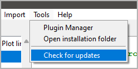
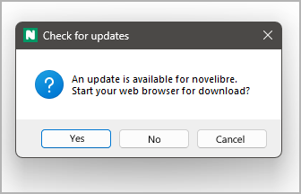
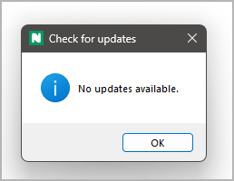

nv_updater
User guide
This page refers to the latest nv_updater release. You can open it with Help > Update checker Online help.
The plugin adds a Check for updates entry to the novelibre Tools menu, and an Update checker Online help entry to the Help menu.

Installing the plugin
Either launch the downloaded nv_updater_vx.x.x.pyzw file by double-clicking (Windows/Linux desktop),
or execute
`python nv_updater_vx.x.x.pyzw`(Windows), resp.`python3 nv_updater_vx.x.x.pyzw`(Linux) on the command line.
“x.x.x” means the version number.
Important
Many web browsers recognize the download as an executable file and offer to open it immedately. This starts the installation.
However, depending on your security settings, your browser may initially refuse to download the executable file. In this case, your confirmation or an additional action is required. If this is not possible, you have the option of downloading the zip file.
Start the update checker
Open the update checker from the main menu: Tools > Check for updates.
If an update is found, a message pops up.

You can choose:
Yes starts your web browser with the update URL.
No skips this update.
Cancel cancels the update check.
Important
The nv_updater plugin only initiates the download process via the system web browser. If a download directory is preset, all zip files with the downloaded releases will end up there. You then perform the actual installation manually as usual.
If no update is found, a message pops up at the end.

Important
To take effect, update installations require a novelibre restart.